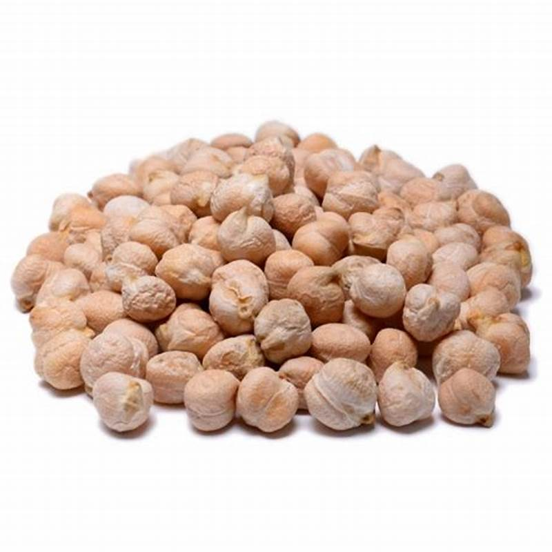

1. Seasons for Growing Chickpeas

Chickpeas are a cool-season crop that grows best in temperate conditions. They are drought-tolerant and thrive in well-drained soils. The best seasons for growing chickpeas are:
- Winter: In regions with mild winters, chickpeas can be sown in late fall or early winter for a spring harvest (October to February).
- Spring: In cooler climates, plant chickpeas in early spring (March to May) once the soil has warmed.